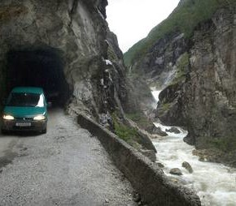

Jordalen Highcamp 2013
Dei siste åra har ein gjeng arrangert ein uoffisiell "Høgleir" i Jordalen, der kjekke folk samlast for å køyre ski og kose seg med lavvo-liv og bål. I år traff me minst like godt som i fjor!

Jordalen er ei bygd i Voss kommune i Hordaland. Bygda ligg i ein sidedal til Nærøydalen, like ved fylkesgrensa mot Sogn og Fjordane. Bygda har vegforbindelse mot sør, via ein bratt og rasutsatt kommunal veg frå E16 like aust for Stalheimskleivi. Etter at du har forsert denne friske ankomsten og kjem ut av den siste tunnelen (dersom du har piggdekk og 4WD) så openber det seg ein flott dal med mykje spennande turmoglegheiter, både sommar og vinter.
Det er mange flotte sidedalar, med mange gode moglegheiter for skikøyring og topptur. Du får alt frå lange slake dalar som passar godt til fjellski, til dei brattare nedkøyringane for dei med breiast ski og over gjennomsnittet skiferdigheiter.


Turforslag er mellom anna velkjente Bakkanosi (1398 moh), med utsikt ned på Nærøyfjorden, noko som kan kombinerast med å gå ned Rimstigen til garden Bakka. Ruta heilt frå den hårete første delen av bilvegen, inn Slettedalen og opp på Bakkanosi kan du sjå i filmen under. Merk at dette er filma med eit gamalt GoPro-kamera, og kvaliteten er mangelfull.
Andre turforslag er Øyastølfjellet (1342 moh) og Fyrdalsnipa (1461 moh). Vinteren 2012 var fyrste gong me arrangerte ein liten samling i Jordalen, ein såkalla høgleir, med telting og toppturar. Me var vel ca. 10 stk. I år, 2013, var det lagt litt meir innsats, der deltakartalet nærma seg 30. Forholda var rett og slett fantastiske, med pudder, god stemning og god drykk.
Les meir på Fri Flyt (skrive av sirita_).
Under ser du GPS-loggen for ein tur som går over begge dei nevnte toppane. Merk at det er flott å skri ned fleire stader mellom. Du kan og laste ned GPS-ruta.
Til slutt ein film som mellom anna inkluderer litt køyring og liv frå høgleiren i år.